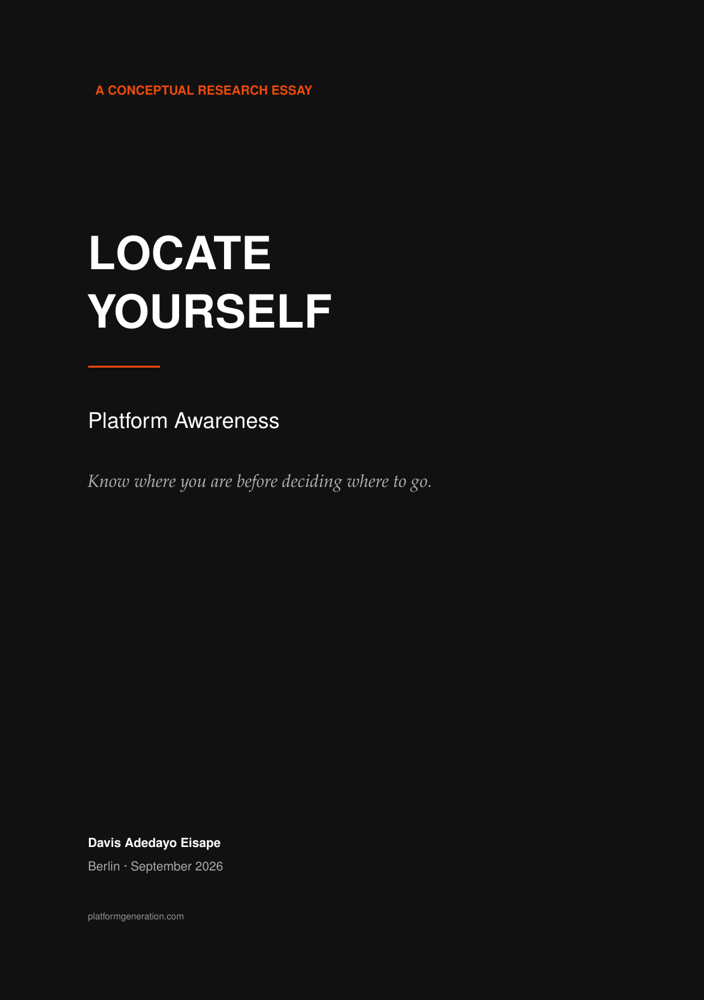

01
Where are we?
Identify the platforms and layers that are relevant to the strategic question.
Platform Awareness. Know where you are before deciding where to go.
Platform strategy often begins after a focal platform has already been selected and an organization's role within it has largely been assumed. Locate Yourself asks an earlier question: which platforms already matter to the organization, and who is the organization within each of them?
Know where you are before deciding where to go.

Organizations rarely participate in only one relevant system. A company can own one platform, consume infrastructure from another, provide capabilities into a third, and depend on standards, interfaces or institutions that become strategically visible only when they change.
Platform Awareness is proposed as an organization's explicit and revisable understanding of the platforms in which it operates, the layer, position and role it occupies within each, and the strategic possibilities, dependencies and implications arising from those positions and their interconnection.
The essay develops the idea through a prehistoric boundary case and five historically grounded organizational cases, then introduces the Platform Landscape as a way to make several positions visible at once using connected PBMC Core Frames.
The framework does not begin by asking whether an organization should become a Platform Owner. It begins by making position visible.
Identify the platforms and layers that are relevant to the strategic question.
Understand the organization's position and counterpart roles within each platform.
Recognize the opportunities, dependencies and implications created by those positions.
The cases are illustrative rather than representative. Their purpose is not to prove that Platform Awareness causes success, but to make recurring positional movements visible across very different periods and technologies.
A coffee-house owner becomes a strategically important participant in a wider maritime information and exchange system he does not own.
An existing communications network supports a different transaction when trusted information enables remote access to funds.
Mail order scales by fitting the business to postal and railway infrastructures whose governance remains outside the firm.
Reusable capabilities that first appear as internal technical prerequisites are reinterpreted as infrastructure for external developers.
A successful Platform Owner can itself become Provider or Partner when a new interface layer forms around commerce.
A Platform Landscape is an organization-centred configuration of connected PBMC Core Frames. Each frame preserves a Core Value Unit and the Owner, Provider, Consumer and Partner perspectives.
The purpose is not to map everything. It is to make the systems that matter to a particular strategic question explicit enough to compare, challenge and revise.
Create a PBMC ↗Platform Generation Research Series, No. 01 / 2026. Berlin: Platform Generation.
Eisape, D. A. (2026) Locate Yourself: Platform Awareness. Platform Generation Research Series, No. 01 / 2026. Berlin: Platform Generation.